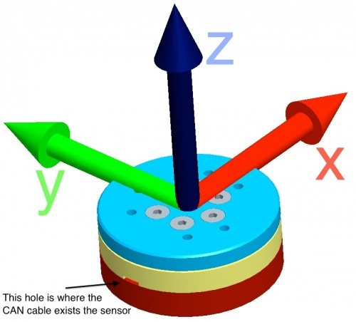
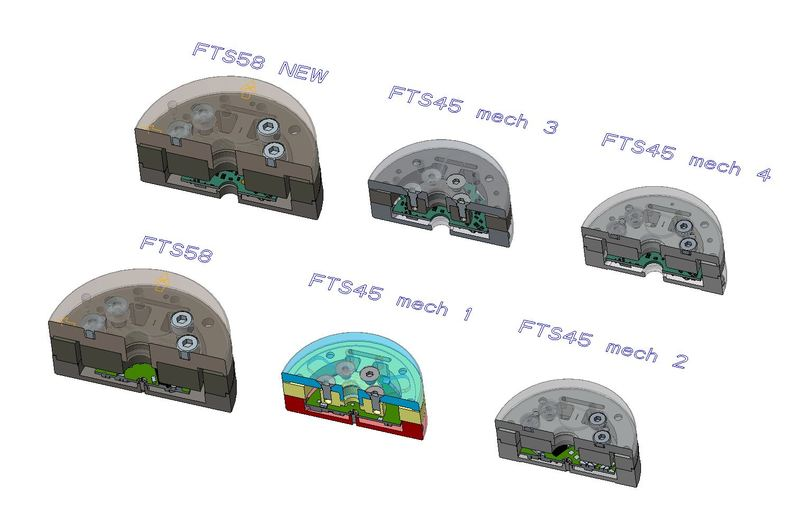
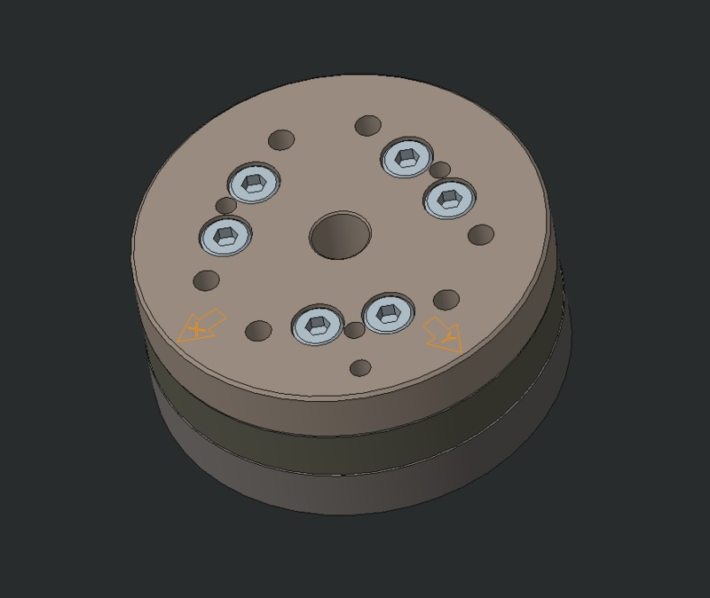
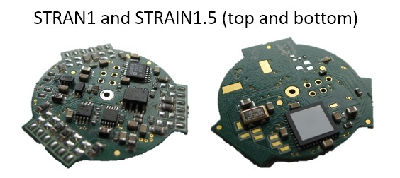

F/T Sensors¶
The F/T sensor (6-dof) has also been specially designed to fit the iCub. However, the size of the sensor has been made compatible with an existing commercial product. On the other hand the signal conditioning electronics has been made to fit the sensor itself, consequently reducing the space required. The F/T sensor is based on a classical Wheatstone bridge design employing 12 semiconductor strain gauges arranged in a 6 half-bridges configuration.ed robots
Mechanical specifications¶
Physical specifications¶
The physical specifications of the sensor are reported in Table 1:
| Weight | 0.122[kg] |
| Diameter | 45[mm] |
| Height | 18.4[mm] |
| Table 1: Physical specifications of the sensor |
Measurement frame specifications¶

he F/T sensor reference frame. Please notice that key elements to localize the reference frame on the sensor are two: (1) the hole where the CAN exits the sensor and (2) the thick VS the thin sensor cover.
The sensor is calibrated to measure the Force/Torque applied by the upper (blue) part of the sensor on the lower (red) part of sensor, and express it on the F/T sensor reference frame.
Calibration specifications¶
The sensors are calibrated in order to obtain high resolution in typical operating regions. Typical values of the range and resolution for a sensor after the calibration procedure are reported in Table 2. The resolution is typical for most applications and can be improved with filtering. Resolutions quoted are the effective resolution after dropping three counts of noise.
| Fx, Fy [N] | Fz [N] | Tx, Ty [Nm] | Tz [Nm] | |
|---|---|---|---|---|
| Range | 1500 | 2000 | 35 | 25 |
| Resolution | 0.25 | 0.25 | 0.005 | 0.004 |
| Table 2: typical values after sensor calibration |
Creo CAD model¶
The CAD model of FTSens is available in the hardware repository of the icub-tech-iit organization on GitHub.
In particular the FT sensor assembly name is ic_008_a_001.asm.1.
Additional info¶
Additional specification are reported in this document.
For more info on how to flash the firmware and the calibration matrix on a FT sensor, check the documentation page on Firmware.
Electronics¶
There are three versions of the electronic board of the iCub's FT sensor: STRAIN (also known as STRAIN1), STRAIN1.5 or STRAIN2. All this electronic boards sample the analog strain gauges voltages, and expose the measurements over a CAN interface.
Low-level documentation and materials about the STRAIN2 board is available here .
Firmware source code:
FT45 and FT58 Assembly Variants (Mechanics + Electronics)¶
| IITCODE | ALIAS | REV | Description | Note |
| 12487 | 12487 (da cambiare) | - | FT45 M4 cod.12191 - IC_008_A_001 +STRAIN2 cod.11996.B + Wiring materials cod. 12478.0.0 | Strain-gauge code missing |
| 12491 | FT45_M1_E2 | - | FT45 M1 cod. ? - STRAIN2 cod.11996.B + Wiring materials cod.12478.0.0 | Mech. assembly (with strain-gauge code) missing |
| 12031 | FT45_M1_E1.5 | - | iCub, assembly - Force/Torque sensor (5x gain), with mechanical parts, strain-gauge, strain board and cabling | |
| 12621 | FT58_M2_E2 | - | FT58 M2 cod.12176.A1 - IC_005_A_001 + STRAIN2 cod.11996.B + Wiring materials cod.12478.0.0 |

FT45 Mechanical variants¶
| FTSENSOR45A | IC_001_A_001_ftsensor45 | IC_007_A_001 | IC_008_A_001 | |
| informal name | FT45 | FT45 v.2 (a.ka. Diego's sensor) | - | - |
| variant id | FT45_M1 | FT45_M2 | FT45_M3 | FT45_M4 |
| first mechanical structure | YES | NO | YES | NO |
| second mechanical structure * | NO | YES | NO | YES |
| central through hole ** | NO | NO | YES | YES |
| obsolete | YES | YES | YES | NO |
* no countersunk screw, with pin assembly
** requires STRAIN2 board
FT58 variants¶
| ICUB3_005_A_001_ftsensor58 | IC_005_A_001 | |
| informal name | FT58_M1 | FT58_M2 |
| variant id | FT58_M1 | FT58_M2 |
| central through hole ** | NO | YES |
** requires STRAIN2 board
FT58 assembly¶
The FT58 sensor is assembled as described hereafter.
The assembly of the sensor is a 6 step process:
- the top part, the sensor part and the bottom part are screwed together
- the pin holes are enalrged with the proper bore tool
- the sensor part is gaged
- the sensor is assembled and wired with the electronic board
- the three sensor parts are screwed together: the sensor is closed
- if needed pins are added with the proper strain relieving tool
For further details on the assembly refer to the component drawing in the repository folder. The drawing code is depends on the sensor to be assebled (refer to the table in the above section for the code).
The top interface is fixed with 6 M4x10 UNI 5931 counterbore hex. screws (cod. V4-10--_-_U5931_GC). The recommended tightening torque is 2.8Nm. 
The bottom interface is fixed with 6 M4x10 UNI 5931 counterbore hex. screws (cod. V4-10--_-_U5931_GC). The recommended tightening torque is 2.8Nm.
FT58 assembly on iCub3¶
The FT58 sensor is assembled on iCub3 as represented in th following pictures. The top interface is fixed with 6 M4x12 UNI 5933 countersunk hex. screws (cod. V4-12--_-_U5933_C). The recommended tightening torque is 2Nm.
The bottom interface is fixed with 6 M4x12 UNI 5933 countersunk hex. screws (cod. V4-12--_-_U5933_C). The recommended tightening torque is 2Nm.
FT Sensor Electronics Variants¶
There are three cards for reading six axis F/T Sensors:
| Name | IIT Code and .Revision | Description | Status | Compatible with Mechanical variant |
|---|---|---|---|---|
| STRAIN1 | 832.B | STRAIN_01F, IIT - Electronic board, 6-axial strain gauges amplification card with enhanced noise capability | end of life | FT45_M1,FT45_M2,FT58_M1 |
| STRAIN1.5 | 832.F | STRAIN_01F, IIT - Electronic board, 6-axial strain gauges amplification card with enhanced noise capability, 5X gain | end of life | FT45_M1,FT45_M2,FT58_M1 |
| STRAIN2 | 11996.B | STRAIN2, IIT - Electronic board, 6 channels strain gauges variable gain interface board with CAN/UART, Temperature sensor, IMU, STM32L4 | in production |
FT45_M1*,FT45_M2*,FT58_M1* FT45_M3**,FT45_M4**,FT58_M2** |
* if breaking the legs
** if removing the central ring

Cable connections¶
STRAIN¶
STRAIN2¶
Summarized usable codes¶
| short description | Asm. cod. | Wingst | Rev. | Dwg. Micron Istrumnents code | status |
|---|---|---|---|---|---|
| FTSensor 45 - Strain 1 (mech 1) | FTSENSOR45A | 3407 | A2 | 150923 | only maintenance |
| FTSensor 45 - Strain 1 (mech 2) | IC_001_A_001_ftsensor45 | not present | 0 | 150923 | OBSOLETE |
| FTSensor 45 - Strain 2 (mech 3) | IC_007_A_001 | 12183 | A2 | 151245 | OBSOLETE |
| FTSensor 45 - Strain 2 (mech 4) | IC_008_A_001 | 12191 | A1 | 151245 | ACTIVE |
| FTSensor 58 - Strain 1 | ICUB3_005_A_001_ftsensor58 | 10308 | A1 | 151351 | OBSOLETE |
| FTSensor 58 - Strain 2 | IC_005_A_001 | 12176 | A1 | 151351 | ACTIVE |
Additional material¶
- FT45 - without Temp. Compensation
- FT45 - Temp. Compensation included
- FT45 - Temp. Compensation included 2
- FT58 - without Temp. Compensation
- FT58 - Temp. Compensation included
More information¶
- F/T sensors are mounted by Micron Instruments